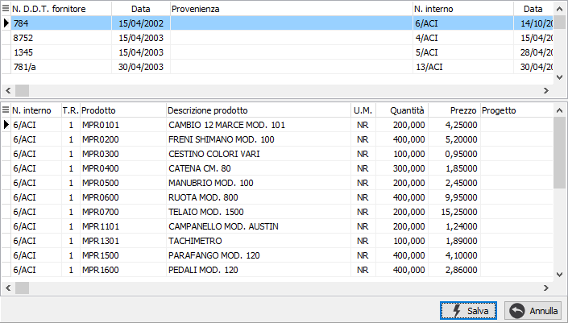
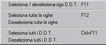
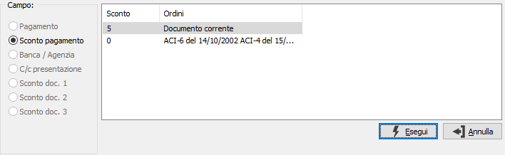

Evasione Ddt fornitori
L'evasione di Ddt da parte delle fatture ha come filtro sempre il codice del fornitore.
Se per lo stesso fornitore sono stati inseriti più Ddt con divise diverse viene visualizzata una finestra che permette all'utente di specificare quali di questi Ddt utilizzare per la selezione.
In questa finestra è possibile specificare una singola divisa da utilizzare per selezionare i Ddt del fornitore. Dopo aver inserito i criteri necessari e premuto il pulsante Esegui, i Ddt selezionati vengono visualizzati nella finestra di selezione.
Nel caso in cui esistano Ddt da evadere per il fornitore tutti con la stessa divisa viene direttamente richiamata la finestra di selezione.

La finestra è suddivisa in due sezioni.
Nella sezione superiore sono presenti i riferimenti ai Ddt da evadere. Selezionando un elemento in questa sezione, tramite il mouse o spostandosi con le frecce, nella parte sottostante vengono visualizzati i dettagli delle righe relative.
Nella sezione inferiore è possibile scegliere quali righe inserire nel documento.
Per selezionare oppure annullare la selezione di un rigo è sufficiente fare doppio clic con il mouse sul rigo interessato (se selezionato verrà annullata la

selezione altrimenti il contrario). È anche possibile utilizzare il menù indicato a lato (attivato tramite la pressione del tasto destro del mouse) oppure utilizzare gli appositi tasti funzione. È consentito selezionare o deselezionare un solo rigo oppure tutte le righe oppure un intero Ddt o tutti i Ddt presenti nella selezione.Se un rigo viene evaso completamente lo sfondo appare di colore giallo chiaro; non è possibile selezionare una quantità parziale.
La pressione sul pulsante Esegui determina l'inserimento dei dati selezionati nel documento.
Nel caso in cui all'interno dei Ddt selezionati o tra i Ddt selezionati ed il documento ci sia incoerenza nelle condizioni di fatturazione, viene visualizzata una finestra che permette di selezionare, tra le condizioni di fatturazione che vanno in conflitto, quelle da utilizzare nel documento.

La finestra indica sulla destra il tipo di campo e visualizza nella parte sinistra i codici con le descrizione ed il documento di provenienza. Dopo avere indicato per ogni condizione di vendita qual'è la modalità corretta è sufficiente premere il pulsante Esegui per riportare i valori nel documento.